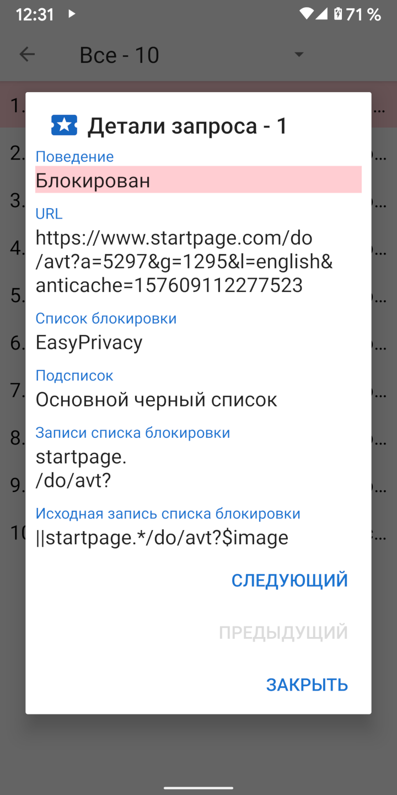

При загрузке URL-адреса обычно происходит ряд запросов ресурсов для CCS, JavaScript, изображений и других файлов. Сведения об этих запросах можно просмотреть в активности запросов. В навигационном меню имеется ссылка на активность запросов, а также показано, сколько запросов было заблокировано. При нажатии на запрос отображаются сведения о том, почему он был разрешен или заблокирован.
Privacy Browser включает четыре основных списка фильтрации основанных на синтаксисе Adblock: EasyList, EasyPrivacy, Fanboy’s Annoyance и Fanboy’s Social. Эти списки фильтрации преобразуются Privacy Browser в следующие 22 подсписка, которые проверяют запросы ресурсов в перечисленном порядке.
Исходные списки проверяются на начало URL-адреса. Окончательные списки проверяются на конец URL-адреса. Списки доменов проверяют только определенные домены. Сторонние списки применяются только в том случае, если корневой домен запроса отличается от корневого домена основного URL-адреса. Списки регулярных выражений следуют за синтаксисом регулярных выражений. Каждый элемент подсписка имеет одну или несколько записей. В случае подсписков домена, запрос ресурса проверяется только в отношении элемента, если первая запись соответствует домену основного URL-адреса.
Из-за ограничений WebView в Android и для ускорения обработки запросов, Privacy Browser реализует упрощенную интерпретацию синтаксиса Adblock. Иногда это может привести к ложным срабатываниям, когда ресурсы разрешаются или блокируются не так, как предполагалось в исходной записи. Более подробное описание того, как обрабатываются записи списка фильтрации, можно найти на stoutner.com.
Privacy Browser имеет три дополнительных списка фильтрации.
UltraList и
UltraPrivacy
они фильтруют рекламу и трекеры, которые не фильтруют EasyList и EasyPrivacy. Третий блокирует все сторонние запросы.
Запрос считается сторонним, только если базовый домен запроса отличается от URL базового домена.
Например, если www.website.com загружает изображение с сайта images.website.com,
он не будет заблокирован как сторонний запрос, поскольку оба они используют один и тот же базовый домен website.com.
Блокировка всех сторонних запросов повышает конфиденциальность, но этот список фильтров отключен по умолчанию, поскольку он нарушает работу большого количества сайтов.